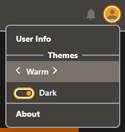

See It Live
Want to see a real tw-themes app?
svelte-native-forms is the project where tw-themes was conceived. It is a Svelte utility providing form validation, and contains a demo app illustrating various samples. Here is a live demo:
For the purposes of demonstrating tw-themes, we are merely focused on changing the active theme ... found the upper right dropdown menu:

You can select your "theme color", and toggle "Dark Mode" ... try it (in the live demo above).
From a "theme coding" perspective, there are only a few modules of interest:
-
This is the primary module that promotes our
TwThemesobject, through theinitTwThemes()invocation, fusing the relationship between ourSchemaandThemes.The
Schemais defined as follows:const schema = [ 'primaryLight', 'primary', 'primaryDark', 'secondaryLight', 'secondary', 'secondaryDark', 'onLight', // typically black 'onDark', // typically white 'accentBorder', // typically a gray tone (e.g. 'coolGray-600') // ... used for borders in SideBar/NavBar/Menu/Dialog/etc. 'backdrop', // universal background // ... can be a gray tone (e.g. 'coolGray-200') // ... or lighter primary shade (e.g. `${primary}-100`) // ... lighter that 'primaryLight' // providing NOT too much of same color ];Our
Themesare defined as follows:const themes = { 'Warm': { contextColors: gen('warmGray', 'amber'), }, 'Cool': { contextColors: gen('coolGray', 'orange'), }, 'Mono': { contextColors: { ...gen('coolGray', 'red'), // ... base colors 'primaryLight': 'white', // ... overrides: 'primaryDark': 'black', 'backdrop': 'white', } }, 'Amber': { contextColors: gen('amber', 'indigo'), }, 'Teal': { contextColors: gen('teal', 'rose'), }, 'Cyan': { contextColors: gen('cyan', 'orange'), }, 'Indigo': { contextColors: gen('indigo', 'amber'), }, };Notice that we utilize a helper function that generates the default contextColors (which can be overridden):
function gen(primary, secondary) { return { 'primaryLight': `${primary}-300`, 'primary': `${primary}-500`, 'primaryDark': `${primary}-900`, 'secondaryLight': `${secondary}-300`, 'secondary': `${secondary}-500`, 'secondaryDark': `${secondary}-900`, 'onLight': 'black', 'onDark': 'white', 'accentBorder': 'coolGray-600', 'backdrop': `${primary}-100`, // or: 'coolGray-200' }; }Finally, we invoke
initTwThemes()and promote theTwThemesobject through an export.const initialThemeName = 'Warm'; // AI: ENHANCE TO pull from local storage const initialInvertShade = true; // ditto const TwThemes = initTwThemes(schema, themes, initialThemeName, initialInvertShade); export default TwThemes;
src/layout/ThemeSelector.svelteThe
<ThemeSelector>component is an extremely simple solution to changing the theme. It merely invokes theactivatePriorTheme()/activateNextTheme()functions on the arrow clicks.While I don't expect you to be a svelte user, the relevant code snippets are:
<script> import TwThemes from './colorTheme'; </script> <span> <Icon name="arrow_back_ios" ... snip snip on:click={() => theme = TwThemes.activatePriorTheme()}/> {theme} <Icon name="arrow_forward_ios" ... snip snip on:click={() => theme = TwThemes.activateNextTheme()}/> </span>Easy Peasy!
src/layout/ThemeInversionSelector.svelteThe
<ThemeInversionSelector>component is an equally simple solution to changing the theme's dark mode.It merely invokes the
toggleInvertShade()function.-
Of course, we communicate our Context Colors to tailwind through
TwThemes'scolorConfig()function:tailwind.config.jsexport default { ... snip snip theme: { extend: { colors: TwThemes.colorConfig(), }, }, ... snip snip }; Lastly, the html markup found throughout the project is utilizing the context colors defined by our app.
<span class="text-onLight hover:bg-primary hover:text-onDark ... snip snip"> That's All Folks :-) </span>